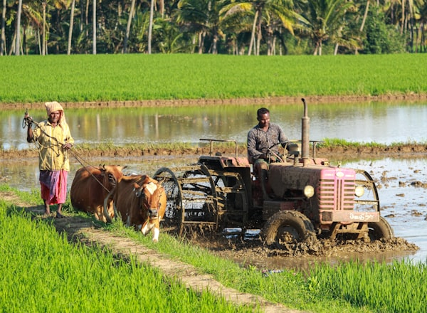
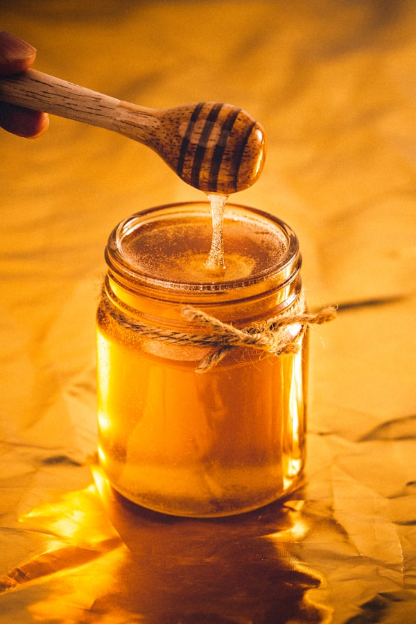
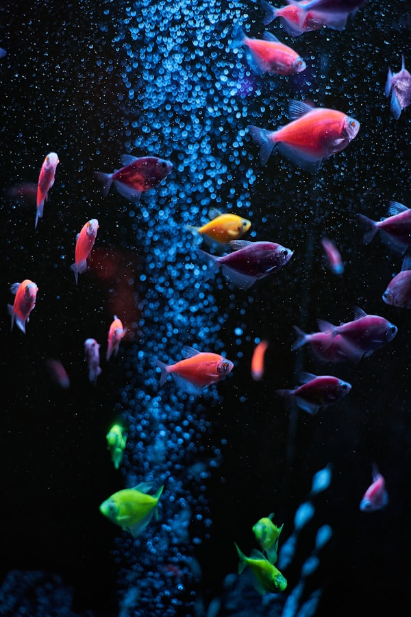
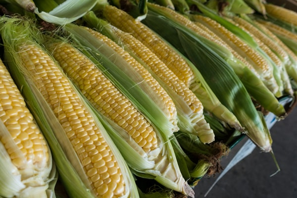
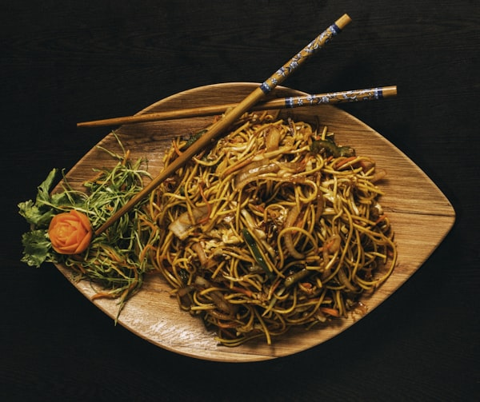
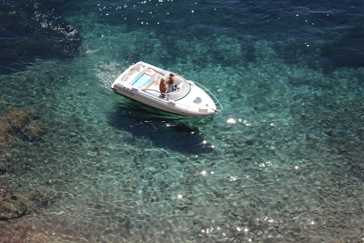
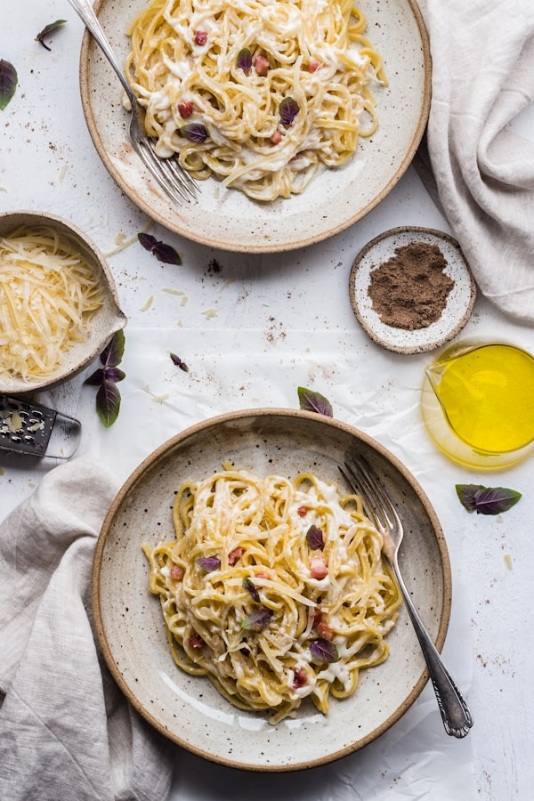
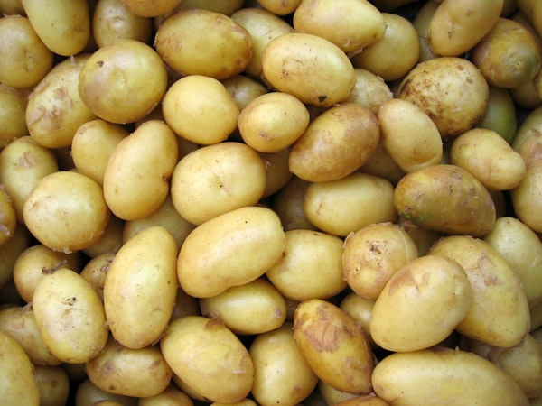

Diagnose Crop
Diseases
Instantly
فوری فصل کی بیماری تشخیص
Powered by PARC Pakistan's 671 disease records and Google Gemini AI. Expert bilingual diagnosis for every Pakistani farmer.
Everything a Farmer
Needs to Know
From instant disease detection to Pakistan-specific treatment recommendations with local brand names.
AI-Powered Diagnosis
Describe symptoms in Urdu or English. Gemini searches 671 PARC-verified records using semantic vector matching for instant results.
 🇵🇰
🇵🇰
Pakistan-Specific Brands
Actual Pakistan market brand names, exact doses per acre, and optimal spray timing — not generic advice you can't act on.
Biological Control
Eco-friendly alternatives — beneficial insects, Trichoderma, resistant varieties — to protect your farm sustainably.

📊Severity & Yield Loss
Know exactly how serious the threat is — severity ratings from Low to Critical, plus estimated yield loss percentages.
 🗣️
🗣️
اردو میں مکمل معلومات
Full bilingual support — every diagnosis, treatment plan, and safety warning in both Urdu and English.

⚠️Safety Warnings
Detailed pesticide safety instructions in Urdu — gloves, masks, re-entry intervals, animal precautions.
19 Major Crops Fully Covered
Browse disease databases, treatment guides, and season information for every major Pakistani crop.

🌿

🌽
🫘
🥜
🌿
🥔How Fasal Doctor Works
From symptom to treatment plan in under 10 seconds — no agricultural expertise needed.
Describe Symptoms
Type what you observe — yellowing, spots, wilting — in plain Urdu or English. No technical terms needed.
علامات بیان کریںAI Searches 671 Records
Gemini AI converts your query to a vector and searches all 671 PARC-verified disease records using semantic similarity.
AI تشخیص کرتا ہےGet Bilingual Diagnosis
Receive disease name in both languages, severity rating, symptoms explanation, and complete treatment with local brands.
مکمل تشخیص ملےProtect Your Crop
Follow exact spray chemical, Pakistan brand name, dose per acre, timing, and Urdu safety warnings to limit losses.
فصل بچائیںTrusted by Pakistani Farmers
میں نے گندم میں پیلے دھبے دیکھے اور فصل ڈاکٹر نے فوراً بتایا کہ یہ Yellow Rust ہے۔ سپرے کے بعد فصل ٹھیک ہو گئی۔ بہترین ایپ ہے۔
"Cotton leaves were curling and I had no idea what to do. Fasal Doctor diagnosed CLCuV in seconds and gave me the exact Syngenta brand to buy. Saved my entire crop."
اردو میں جواب ملنا بہت آسان ہے۔ ہمارے گاؤں کے بزرگ کسان بھی اب استعمال کر سکتے ہیں۔ دوا کا نام اور ڈوز بھی صحیح بتاتا ہے۔
Join hundreds of Pakistani farmers sharing their experiences.
✍️ Share Your StoryProtect Your Crop Today
Describe any symptoms and get an expert AI diagnosis in seconds — free, accurate, bilingual.